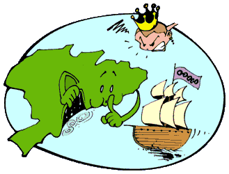
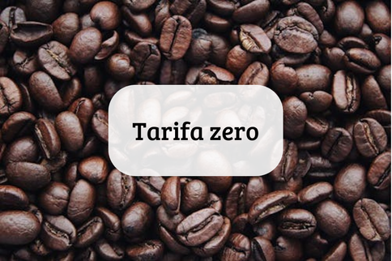

Década de 1830

Lei "para inglês ver"
Em 1831, o Brasil promulgou a chamada "Lei para Inglês Ver", um conjunto de medidas tomadas pelo governo brasileiro para cumprir as exigências do Reino Unido em relação à abolição do tráfico de escravizados. A pressão inglesa, que já havia abolido o tráfico negreiro em 1807 e adotado uma postura abolicionista, forçou o Brasil a adotar medidas similares, embora com um caráter mais simbólico do que efetivo.

Tarifa 0 do café - Eua
Em 1833, o Brasil e os Estados Unidos estabeleceram um acordo importante relacionado ao comércio de café, que ficou conhecido como Tarifa Zero do Café. Esse acordo foi um marco nas relações comerciais entre os dois países, já que os Estados Unidos, ao adotarem a tarifa zero sobre o café brasileiro, abriram um mercado ainda mais amplo para a exportação do produto brasileiro. Na época, o Brasil já era o maior produtor e exportador mundial de café, e a planta havia se consolidado como um dos principais produtos da economia brasileira, especialmente nas regiões produtoras, como Rio de Janeiro, São Paulo e Minas Gerais.